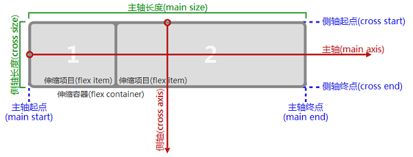

栅格系统
ionic的栅格系统采用了CSS3的弹性盒（Flexible Box）模型，这使得它与大多数 栅格系统都有所区别。
Flex布局主要思想是让容器有能力改变其子元素的宽度、高度甚至先后顺序， 从而以最佳方式填充可用空间。
注意：CSS3引入Flex容器的主要目的是为了适应所 有类型的显示设备和屏幕大小：
示例： 
重点：在ionic中使用栅格系统主要使用两个类：
1..row - 在容器元素上使用.row类，表示将其设置为弹性容器，即Flexible Box。
2..col - 在子元素上使用.col类，其扩展系数和收缩系数都被设置为1。这意味着 所有的子元素将平分容器的宽度。